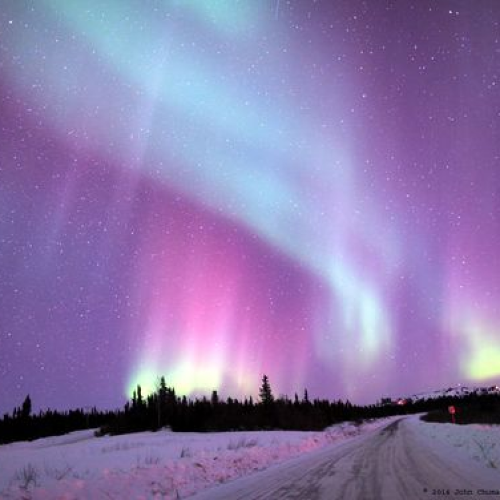
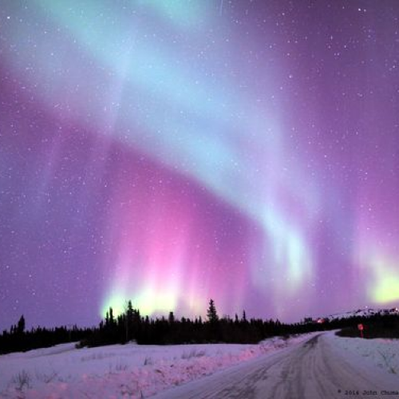

ЛУЧШИЙ СЕРВИС ДЛЯ ВЫБОРА ПОДАРКОВ
Возможномть получить консультацию у ученых
Около 8% пользователей выбирают этот сертификат
Первые в России начали Охотится за Сиянием
В последнее время экскурсии северное сияние, становятся все более популярными, и в списке многих любителей путешествий этот пункт является обязательным. Кольский полуостров, является наиболее благоприятным местом в россии для наблюдения за северным сиянием. Наша экскурсия стартует из мурманска.


 
